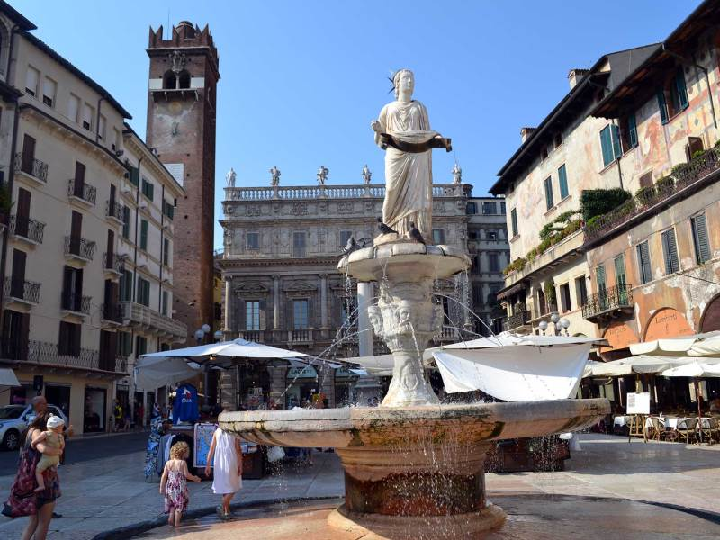
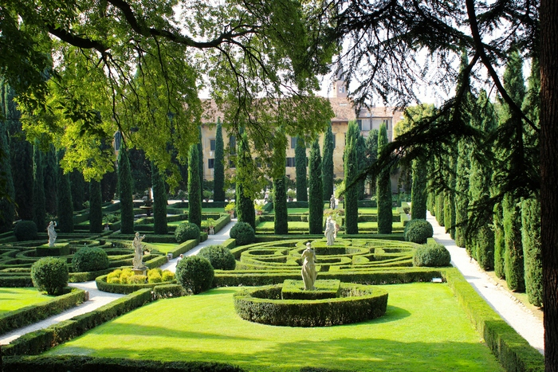

С древних времен Рим именуется как сердце италийской истории, Венеция именуется как город бесконечных каналов и множественных мостов, а знаменитая Верона величается городом любви и романтики. И в этом, несомненно, огромная заслуга великого Шекспира, сделавшего этот городок домом Ромео и Джульетты. Но, как правило, все романтические особи приезжают в Верону не только лишь для того, чтобы посмотреть на то место, где развивалась известная на весь мир история любви, но и посмотреть на саму Верону, отличающуюся восхитительными пейзажами и архитектурными строениями, а еще необычной романтической атмосферой.
В течение всего дня эта площадь чем-то похожа на торговую площадь (торговцы сувенирами настаивают, чтобы все туристы приобретали их продукцию), а в вечернее время это место заполняют местные жители и туристы, наслаждающиеся сладким ликером Кампари и прочими закусками в ресторанах и кафе находящихся поблизости.
И в случае если эта знаменитая площадь просто случайно появилась на вашем пути, как бы вы не торопились, задержитесь на минутку и посмотрите вокруг по сторонам. И вас приятно удивит то, что вы очутились в окружении замков эпохи Возрождения и современных кафешек, с которых доносятся удивительные запахи свежеиспеченной пиццы.
Этот большущий амфитеатр, построенный в 1 столетии н. э., считается неким ответом римскому Колизею (а он, в совою очередь, был построен раньше Веронского аж на пятьдесят лет!). Поразительно, но этот амфитеатр остался почти нетронутый безжалостным течением времени. Каждый год летом в этом месте проводится один из самых популярных оперных фестивалей в мире. Узнай больше здесь.
Из этой вышки вы сможете увидеть восхитительный вид на город. Попасть на самую вершину вы сможете сами (но вам нужно учитывать, что лестница очень высокая), или же можно значительно упростить себе жизнь и воспользоваться лифтом. Строительство этой средневековой башни началось еще в двенадцатом столетии, но потом она была достроена еще много раз, ее строили до тех пор, пока ее высота не достигла восьмидесяти четыре метров. Расположена эта известная вышка, именованная в честь одного знаменитого рода из Вероны рядом с Пьяцце делле Эрбе, и рядом с Палаццо делла Раджоне.
Этот зал заседаний городского суда является прекрасным образцом гражданской архитектуры эпохи романизма. Это знаменитое сооружение, известное во всем мире благодаря своей крыше, которая имеет довольно уникальную форму корабля, было построено в тринадцатом столетии. Это здание является самым огромным в городе со Средневековых времен. Только одна его крыша по площади, превышает 2000 кв. м. Это здание имеет довольно уникальный интерьер, когда вы окажетесь внутри, то увидите огромное количество восхитительных фресок.
Балкон Джульетты считается самым романтическим местом в Вероне. И понятно, почему это так: именно под этим балконом влюбленный Ромео клялся в любви своей ненаглядной Джульетте. Под этим знаменитым балконом, где давным-давно, жила трагически погибшая Джульетта был оборудован красивый дворик, в котором всегда много туристов, которые хотят прикоснуться к установленной в этом месте скульптуре Джульетты и оставить послание на стене ее дома.
Это знаменитый сад, вне всякого сомнения, является одной из самых прекраснейших зеленых территорий в Италии. Он расположен рядом с большущим замком, который принадлежал довольно богатой семье Джусти из Вероны, и эта семья начала возводить свой дом и парковую зону еще в шестнадцатом столетии. Через триста лет этот сад был перестроен по типу английского сада, и таким и остался он до наших времен. В этом удивительном саду.
В этом дивном саду эпохи Возрождения растет много старых, но все еще крепких цитрусовых деревьев, которые в давние времена так вдохновляли Гёте. И очень интересно будет посмотреть на все статуи и скульптуры, которые расположены в этом саду, ведь они так необычно поражают наше воображение.
Этот мост, построенный из камня, находится, в одной из самых красивых частей Вероны. И, невзирая на все перестройки и изменения, которые с ним произошли, он все же остался явным примером римских построек в Вероне. Как говорят историки, мост, протяженность которого около ста двадцати метров, начали строить еще до восемьдесят девятого года до н.э. Поначалу этот мост был построен из дерева, и много раз обрушивался в 1007, 1153, 1232 и 1239 году. И только в 1503 году мост был выстроен из камня, но зодчие и строители в те давние времена претерпели неудачу: мост разрушился через пару лет. В 1508 году веронские начальники обратились за помощью к прославленному зодчему Фра Джокондо , и у него получилось соорудить надежную постройку моста. В начале апреля 1945 года мост взорвали, и только в 1959 году его отреставрировали, и мост обрел свои предыдущие формы.
Дом купцов считается уникальным строением, которое имеет большую историческую важность и расположен он на Пьяцца делле Эрбе. Вначале его соорудили из дерева, но в четырнадцатом столетии он был перестроен, и стены его соорудили из камней, а также по указанию господина Альберто делла Скала к дому были достроены арки, которые сохранились и до сегодняшнего времени. За весь период своего существования дом купцов был подвергнут некоторым перетрансформациям и его вид, который мы можем наблюдать и сейчас, он обрел только в девятнадцатом столетии.
Этот замок, возведенный еще в пятнадцатом столетии, считается одним из основных украшений площади Пьяцца делле Эрбе в Вероне. Он был построен в стиле Барокко, имеет множество арок, неповторимые окна, колоннады и маскароны. За весь период своего существования этот дворец никогда не подвергался реконструкции. И в семнадцатом столетии кардиналом Маркантонио Маффеем был отдан указ расширить дворец , в ходе перестройки к строению добавилась пристройка, был добавлен еще один третий этаж и был сделан фасад здания в стиле Барокко. Когда вы зайдете вовнутрь замка, то будете поражены великолепной винтовой лестницей из камня, которая была построена без центральных опорных балок.
Этот великолепный фонтан считается памятником архитектуры четырнадцатого столетия. Его построили в период ремонта городского водопровода в конце четырнадцатого столетия по приказу влиятельного семейства делла Скала. Поговаривают, что ранее вблизи этого фонтана торговцы очень удачно продавали свой товар и потому, даже в сегодняшнее время туристы любят бросать в фонтан монеты, так как верят в сказание, которое говорит, что это поможет принести удачливость в торговле.